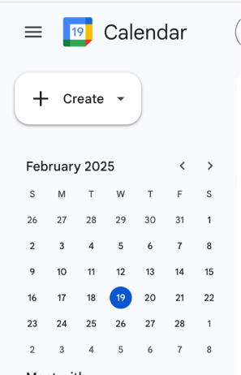

Accesible Components: Dropdown Menu
Dropdown menus are used across countless of applications. This study will evalulate the accesibility factors of dropdown menus and propose improvements for three cases:
- Google Calendar
- Firefox
- Facebook
Case 1: Google Calendar

Case 2: Firefox Menu
Case 3: Facebook Profile Menu

A few screenshots are shown above from each case. Note that not all possible interactions are shown for each (mouse/touchpad, keyboard, and touch). Below will cover the accessibility evaluation for each of these methods:
Input Analysis
| Google Calendar | Firefox | ||
|---|---|---|---|
| Mouse/Touchpad |
|
|
|
| Keyboard |
|
|
|
| Touch (if available) |
|
|
|
The table above summarizes the accessibility of dropdown menus for each input case. I'd rank their performance as follows.
- Google Calendar performs the best across all three input methods.
It is an easy to understand menu that can be navigated easily and conveniently with each of the given methods.
- Facebook is second but a little hard to keep track of with multiple small sub menus at the bottom (see privacy and terms).
- Firefox is the worst of the three as the menu cannot even be opened with keyboard navigation.
Output Analysis
| Google Calendar | Firefox | ||
|---|---|---|---|
| Mouse/Touchpad |
|
|
|
| Keyboard |
|
|
|
| Screen Reader |
|
|
|
| Touch (if available) |
|
|
|
The table above summarizes the accessibility of dropdown menus for each ouput case.
I'd rank their performance as follows:
-
Google Calendar once again performs the best.
It has the most clear output changes for keyboard and best screen reader announcements.
-
Facebook comes in second once again, with worse screen reader messages than Google and small buttons that do not give great outbook feedback when hovered over.
-
Firefox is the worst of the three as it has no screen reader message for the dropdown menu button itself, but it's ease of navigating with keyboard/mouse is similar to that of facebook.
State Model Analysis
State models are a useful way to visualize the different states of a component and how they interact with each other. Below are the state models for mouse users and keyboard users of the Google Calendar dropdown menu.
The state model above shows the different states of the dropdown menu and how they interact with each other. However, there are problems regarding both for screen-reader users. Below, I list a problem with each input method and propose a solution. Tradeoffs are also discussed.
Mouse:
-
Problem: For a user who has trouble seeing the menu bar, it is easy to accidently exit the menu.
-
Solution: Add a "buffer zone" state that stops the mouse from exiting the dropdown menu for a small movement space.
-
Tradeoff: Users who want to quickly leave the menu bar are forced to add extra movement inputs on the keyboard before being allowed to do so.
This decreases efficiency.
Keyboard:
-
Problem: For a keyboard user who is usually using Tab to move around the page,
it is weird that the dropdown menu is closed with tab and they have to switch to keyboard to navigate.
-
Solution: Remove Tab as a way to exit the dropdown menu, making only ESC allowed.
-
Tradeoff: Users lose an options to exit the menu bar by limiting it to only ESC.
For a user who has trouble reaching the ESC key or some other complication, this proposes a new difficulty.
Below are revised state models that implement the solutions above.

Revised Component
Based on the state model analysis above, I developed the following revised Google Calendar dropdwon menu in figma.
The image below shows the revised component in three states.
- Default State
- Click State - Dropdown Initiated
- Hover State - Dropdown Item
Deisgn Annotations
These changes have effects regarding learnability, memorability, efficiency, and accesiblity.
- Learnability: The addition of the buffer zone and lines between menu items makes it easier to learn how to use the dropdown menu without accidently exiting it.
- Memorability: The addition of the larger down-arrow size makes it more memorable for users that this is a dropdown menu.
- Efficiency: The addition of numbered menu items provides an efficient keyboard shortcut for experienced users and streamlines the screen-reader experience.
- Accessibility: The addition of the buffer zone and lines between menu items makes it easier for users with disabilities to use the dropdown menu and differentiate between components.
Reflection
Main Findings:
-
All the dropdown menus I observed did well on usability and accesibility, especially Google Calendar
-
Google Calender had informative screen reader messages, clear output changes, easy navigation, and good learnability.
-
Its main issues were with memorability and efficiency, which I addressed with the revised component.
-
The revised component I designed improved upon the original by adding a buffer zone for mouse user, lines between menu items, larger icons, and keyboard shortcuts
-
The revised component solves for mismatches by bridging gaps between a person's abilities and their environment.
- For example, the keyboard shortcuts make navigation more efficeint for keyboard users and the buffer zone makes it easer for mouse users without exact motor skills to navigate the page.
Accesibility and Inacessibility:
Let's also go over two instances of accesibiltiy and inacessibility in Facebook's menu.
-
Accesibility: The screen reader announces that you are on a dropdown menu when you hover over the profile picture, helping users with vision disabilites.
-
Inacessibility: There are a collection of small buttons for Terms & Agreement, Privacy, and other features on the bottom of the menu that are difficult to click, hurting users with motor disabilities.
Together, these examples show how even when mouse users are prioritized and proper screen-reader functionality is implemented, companies can seek minimization methods to hide their most problematic menu items.
- For example, the keyboard shortcuts make navigation more efficeint for keyboard users and the buffer zone makes it easer for mouse users without exact motor skills to navigate the page.